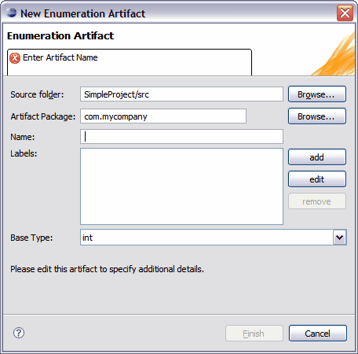

The New Enumeration Artifact wizard allows you to create a new enumeration artifact within a Tigerstripe project. Complete the following procedure to open the New Enumeration Artifact wizard.
To open the New Enumeration Artifact wizard and create your first enumeration artifact:
- Ensure that the Tigerstripe Perspective is active. For more information, refer to Tigerstripe Perspective.
- Click Tigerstripe, select New, and click Enumeration. Alternatively, you can select the Enumeration icon on the Tigerstripe toolbar (
 ). The New Enumeration Artifact wizard appears.
). The New Enumeration Artifact wizard appears. - Enter a name for the enumeration artifact in the Name text box and click Finish.

As with other types of Tigerstripe artifact wizards, the New Enumeration Artifact wizard requires that you enter a set of parameters before you can successfully create your enumeration artifact. The following outlines the information available on the New Enumeration Artifact wizard.
- Source Project: the source project in which the enumeration artifact is being created. In most cases, Tigerstripe is able to pre-populate this field based on the context. If not populated, or if the wrong project was selected, click Browse to select the correct Tigerstripe project in which the artifact should be created.
- Artifact Package: each artifact is created within the scope of a package. This field shall contain a valid package name. The New Enumeration Artifact wizard will reject all invalid package names.
- Artifact Name: a valid name for the artifact. This name uniquely identifies the newly created artifact within the package. The New Enumeration Artifact wizard will reject all invalid artifact names.
- Base type: In order to provide a hint with regards to the implementation of the enumeration in the various integration profiles, you must select a base type. The base type is used as the base for all labels of the enumeration. The default value is int. Valid base type values include int or java.lang.String. Note: These base types will be mapped to the appropriate primitive types for the XML and WSDL integration profile, therefore "java reference" does not appear in the generated XML schemas.